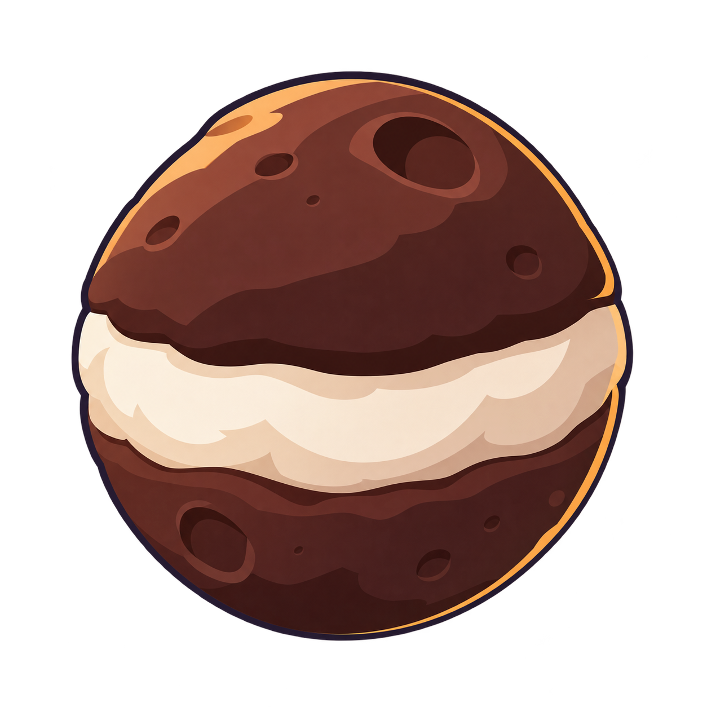
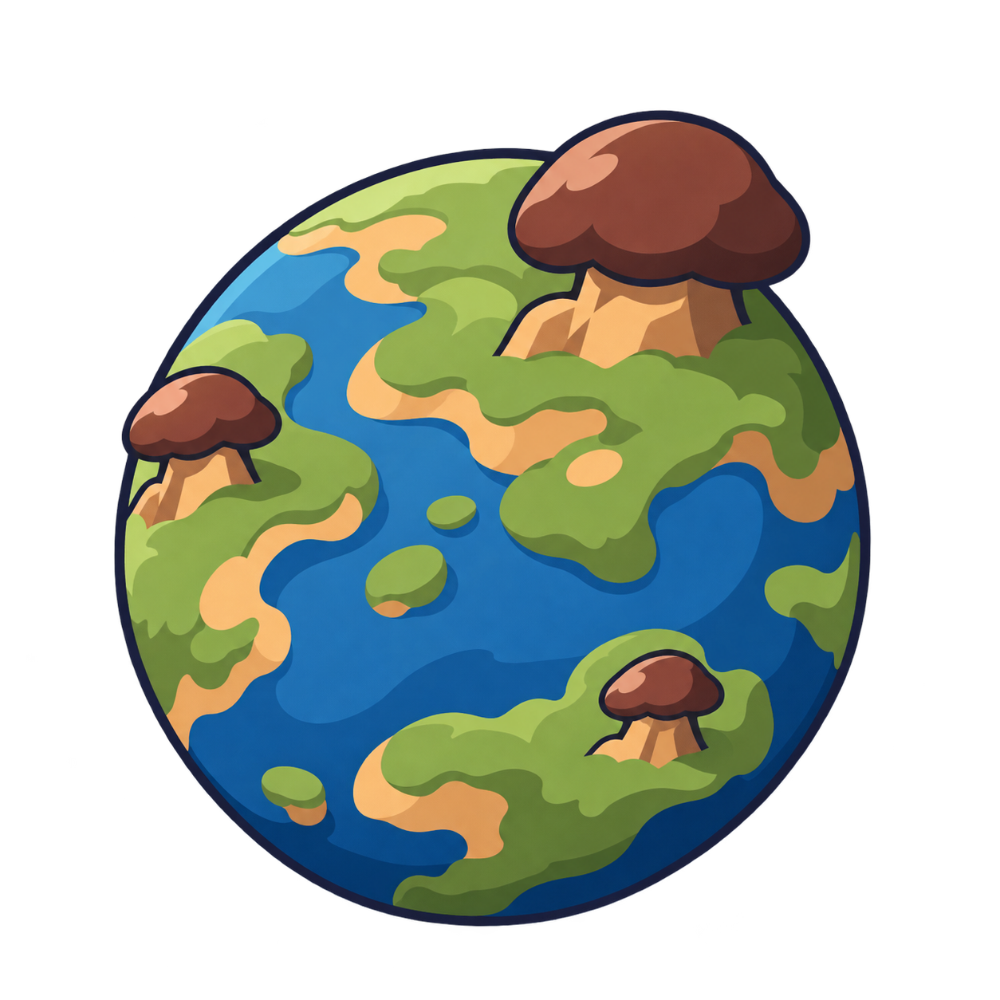
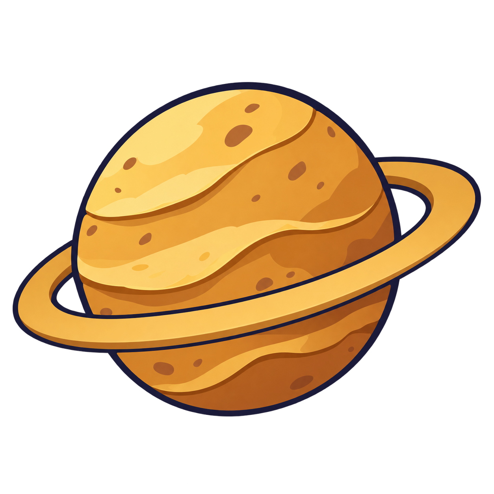
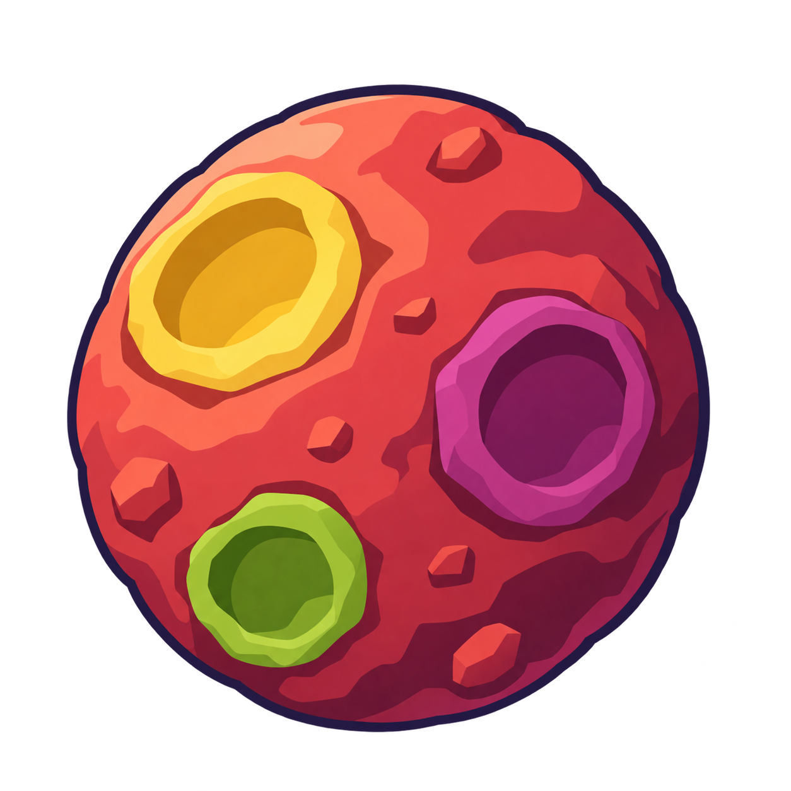
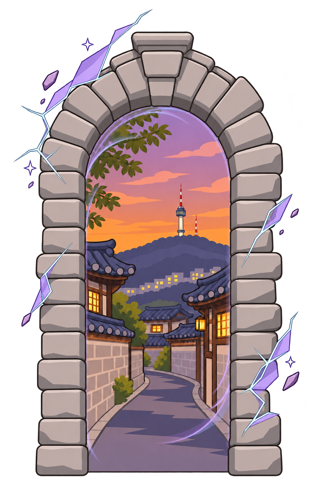
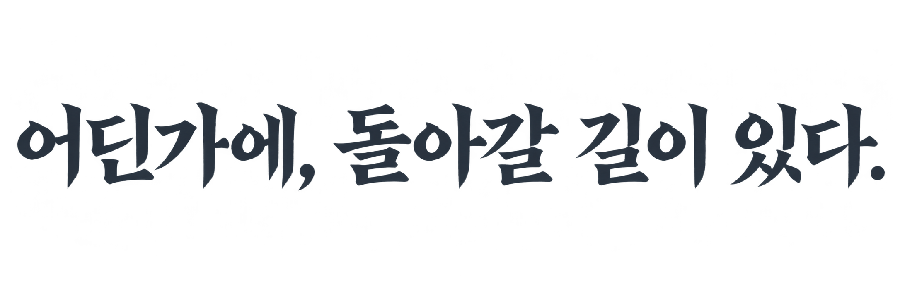

세계관 / THE ORIGIN STORY
상자를 여는 순간,
당신의 우주가
달라진다.
익숙한 과자 속, 낯선 세계.
집으로 돌아가기 위한 항해가 시작됩니다.
PROLOGUE / 낯선 상자
늘 먹던 과자.
처음 만나는 우주.
늘 먹던 과자를 고르던 평범한 하루.
편의점 한편에서 발견한 낯선 오리온 상자 하나가 모든 것을 바꾸었다.
상자를 열자 눈부신 빛이 쏟아졌고, 다시 눈을 떴을 때 익숙한 풍경은 어디에도 없었다. 발을 디딜 땅도, 몸을 지탱할 곳도 없는 우주 한가운데.
그러나 이상하게도 숨은 편안하게 이어졌고, 팔을 저으면 물속을 헤엄치듯 몸이 움직였다.
그리고 눈앞에는, 알고 있던 우주의 법칙으로는 설명할 수 없는 세계가 펼쳐져 있었다.
THE WORLD / 과자로 이루어진 성계
오리온
쏘울로 시스템
태양의 자리에 떠오른 거대한 초코파이.
그 주위를 도는 행성들은 저마다 다른 풍경과 생명을 품고 있었다.
익숙한 과자의 모습으로 이루어졌지만, 그 안에는 아직 누구도 알지 못하는 세계가 살아 숨 쉬고 있었다.

초코파이시스템의 중심
초코송이 어스
포카칩 새턴 고래밥 아틀란티스
고래밥 아틀란티스
비틀즈THE WAY HOME / 귀환의 문
돌아갈 길은,
바다 너머에 있다.
경이로운 풍경을 바라보던 순간도 잠시. 당신은 이곳이 자신이 살던 세계와 전혀 다른 곳이라는 사실을 깨닫는다.
돌아갈 방법을 찾아 낯선 우주를 헤엄치던 중, 고래밥 아틀란티스에서 하나의 포탈을 발견한다. 그 너머로 희미하게 비치는 것은 분명 익숙한 도시의 모습이었다.
하지만 귀환의 문에 이르는 길에는
수많은 문지기가 버티고 있다.


GUARDIANS OF ATLANTIS
친숙한 모습.
헤아릴 수 없는 바다.
작고 귀여운 물고기부터 날카롭게 달려드는 상어, 끈질기게 옭아매는 오징어, 압도적인 크기의 고래까지. 친숙한 과자의 모습만으로는 그들이 지키는 바다를 쉽게 헤아릴 수 없다.
- 물고기
- 상어
- 오징어
- 고래
집으로 돌아가려면,
이 바다를 건너야 한다.
THE AWAKENING / 오래된 함선
잠들어 있던 함선,
깨어나는 바다.
아틀란티스에 도착한 당신은
오래된 함선 한 척을 발견한다.
누가 만들었는지, 어째서 이곳에 남겨졌는지는 알 수 없다. 다만 이 바다를 항해하고 적과 맞서기 위해 만들어진 배라는 흔적만은 분명하다.
낯선 세계에 홀로 떨어진 당신에게, 그 함선은 문지기들을 돌파할 유일한 희망이 된다.
마침내 배에 올라 항해를 시작하는 순간. 오랫동안 멈춰 있던 함선의 움직임이 바다에 전해지고, 고래밥 아틀란티스의 주민들도 새로운 방문자의 존재를 알아차리기 시작한다.
YOUR VOYAGE BEGINS
익숙한 일상으로 돌아가기 위한,
가장 낯선 항해.